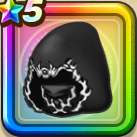

黒嵐のフード
攻略班 7.0点 / けもの系への耐性+5%鳥系への耐性+5%鳥系への耐性+5%ギガンテスへのダメージ+10%バギ属性斬撃・体技ダメージ+5%
くわしい特徴
【レベル別習得スキル】 Lv1けもの系への耐性+5% Lv8さいだいHP+5 Lv10鳥系への耐性+5% Lv12ギガンテスへのダメージ+10% Lv15バギ属性斬撃・体技ダメージ+5% Lv18鳥系への耐性+5% Lv20【レンジャー】守備力+5 Lv23さいだいMP+5 Lv25守備力+7 【限界突破スキル】 1凸けもの系への耐性+5% 2凸守備力+5 3凸すばやさ+5 4凸さいだいHP+5